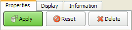

The Properties tab of the object inspector contains user interface controls for specifying various parameters of the reader, source, or filter selected in the pipeline browser. When all of the values have been appropriately specified, click the Apply button at the top of the Properties tab to cause the values to take effect.

There are three buttons that are always at the top of the Properties tab: Apply, Reset, and Delete. The Apply button we have already described. The Reset button may be used if values on the Properties tab have been modified, but the Apply button has not been pressed to cause them to take effect. In this situation, pressing the Reset button will set the controls to the values they had the last time the Apply button was pressed. If the Apply button has not been pressed, the controls are reset to their default values.
The Delete button removes the current instance of a reader, source, or filter (the one selected in the pipeline browser) from the current ParaView session. The Delete button will only be enabled if the item selected in the pipeline browser is not being used as the input to another filter.